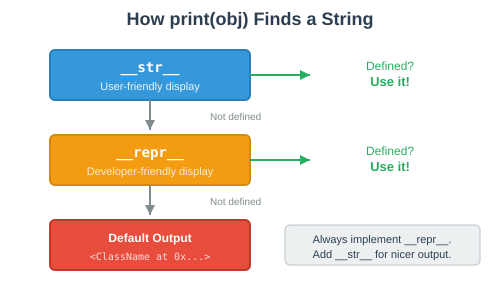
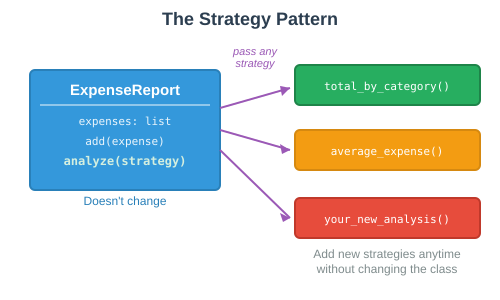

class Expense:
def __init__(self, description, amount, category):
self.description = description
self.amount = amount
self.category = category
rent = Expense("March Rent", 1200.00, "Housing")
print(rent)By the end of this session, you’ll be able to:
Implement magic methods to make custom classes work with Python built-ins
Distinguish between __str__ and __repr__
Make objects sortable, comparable, and iterable
Apply the Strategy pattern to solve data analysis problems
Design classes that are flexible and reusable
class Expense:
def __init__(self, description, amount, category):
self.description = description
self.amount = amount
self.category = category
rent = Expense("March Rent", 1200.00, "Housing")
print(rent)<__main__.Expense object at 0x104a8b6d0>That’s not helpful.
rent1 = Expense("March Rent", 1200.00, "Housing")
rent2 = Expense("March Rent", 1200.00, "Housing")
print(rent1 == rent2)Falseexpenses = [
Expense("Coffee", 4.50, "Food"),
Expense("Rent", 1200.00, "Housing"),
Expense("Gas", 45.00, "Transport"),
]
sorted(expenses)TypeError: '<' not supported between instances of 'Expense'Methods with double underscores that let your class work with Python built-ins
| Magic Method | Python Feature |
|---|---|
|
|
|
|
| REPL display, debugging |
|
|
|
|
|
|
|
|
"hello".__len__() # Same as len("hello") → 5
[1, 2, 3].__contains__(2) # Same as 2 in [1, 2, 3] → True
(42).__add__(8) # Same as 42 + 8 → 50
"hello".__eq__("world") # Same as "hello" == "world" → FalseEvery Python operator and built-in function calls a magic method
__repr__: The Developer’s Viewclass Expense:
def __init__(self, description, amount, category):
self.description = description
self.amount = amount
self.category = category
def __repr__(self):
return (f"Expense('{self.description}', "
f"{self.amount}, '{self.category}')")rent = Expense("March Rent", 1200.00, "Housing")
rentExpense('March Rent', 1200.0, 'Housing')__str__: The User’s Viewclass Expense:
def __init__(self, description, amount, category):
self.description = description
self.amount = amount
self.category = category
def __repr__(self):
return (f"Expense('{self.description}', "
f"{self.amount}, '{self.category}')")
def __str__(self):
return f"{self.description}: ${self.amount:.2f} [{self.category}]"rent = Expense("March Rent", 1200.00, "Housing")
print(rent)March Rent: $1200.00 [Housing]
Uses __str__ | Uses __repr__ |
|---|---|
| Typing |
|
|
f-strings: | Inside containers: |
Debugger displays |
expenses = [Expense("Coffee", 4.50, "Food"), Expense("Gas", 45.00, "Transport")]
print(expenses)[Expense('Coffee', 4.5, 'Food'), Expense('Gas', 45.0, 'Transport')]Objects inside lists, dicts, and sets always use __repr__.
__eq__: Equality Comparisonclass Expense:
def __init__(self, description, amount, category):
self.description = description
self.amount = amount
self.category = category
def __eq__(self, other):
if not isinstance(other, Expense):
return NotImplemented
return (self.description == other.description
and self.amount == other.amount
and self.category == other.category)rent1 = Expense("March Rent", 1200.00, "Housing")
rent2 = Expense("March Rent", 1200.00, "Housing")
print(rent1 == rent2)Trueisinstance() Matters in __eq__def __eq__(self, other):
if not isinstance(other, Expense):
return NotImplemented
return (self.description == other.description
and self.amount == other.amount
and self.category == other.category)rent = Expense("Rent", 1200.00, "Housing")
print(rent == "Rent") # False (not an error!)
print(rent == 42) # False (not an error!)
print(rent == rent) # TrueNotImplemented lets Python handle the comparison gracefully.
__lt__: Less-Than and Sortingclass Expense:
def __init__(self, description, amount, category):
self.description = description
self.amount = amount
self.category = category
def __lt__(self, other):
if not isinstance(other, Expense):
return NotImplemented
return self.amount < other.amountexpenses = [
Expense("Coffee", 4.50, "Food"),
Expense("Rent", 1200.00, "Housing"),
Expense("Gas", 45.00, "Transport"),
]
for e in sorted(expenses):
print(f"{e.description}: ${e.amount}")Coffee: $4.5
Gas: $45.0
Rent: $1200.0class Expense:
def __init__(self, description, amount, category):
self.description = description
self.amount = amount
self.category = category
def __repr__(self):
return f"Expense('{self.description}', {self.amount}, '{self.category}')"
def __eq__(self, other):
if not isinstance(other, Expense):
return NotImplemented
return (self.description == other.description
and self.amount == other.amount
and self.category == other.category)
a = Expense("Coffee", 4.50, "Food")
b = Expense("Coffee", 4.50, "Food")
c = Expense("Tea", 3.00, "Food")
print(a == b)
print(a == c)
print([a, c])Turn to a neighbor and discuss for 60 seconds.
True — same data in a and b
False — different description and amount
[Expense('Coffee', 4.5, 'Food'), Expense('Tea', 3.0, 'Food')] — lists use __repr__
When your class represents a group of things:
class ExpenseReport:
def __init__(self, title):
self.title = title
self.expenses = []
def add(self, expense):
self.expenses.append(expense)
def __len__(self):
return len(self.expenses)
def __contains__(self, expense):
return expense in self.expensesreport = ExpenseReport("March 2026")
report.add(Expense("Coffee", 4.50, "Food"))
report.add(Expense("Rent", 1200.00, "Housing"))
print(len(report)) # 2
print(Expense("Coffee", 4.50, "Food") in report) # True__iter__class ExpenseReport:
def __init__(self, title):
self.title = title
self.expenses = []
def add(self, expense):
self.expenses.append(expense)
def __iter__(self):
return iter(self.expenses)report = ExpenseReport("March 2026")
report.add(Expense("Coffee", 4.50, "Food"))
report.add(Expense("Rent", 1200.00, "Housing"))
for expense in report:
print(expense)Coffee: $4.50 [Food]
Rent: $1200.00 [Housing]__add__class ExpenseReport:
def __init__(self, title):
self.title = title
self.expenses = []
def add(self, expense):
self.expenses.append(expense)
def __add__(self, other):
if not isinstance(other, ExpenseReport):
return NotImplemented
combined = ExpenseReport(f"{self.title} + {other.title}")
combined.expenses = self.expenses + other.expenses
return combinedmarch = ExpenseReport("March")
april = ExpenseReport("April")
q1 = march + april__add__ creates a new object—it does not modify the originals.
| Method | Enables | Example |
|---|---|---|
| Developer display | REPL, debugging, |
| User display |
|
| Equality |
|
| Ordering |
|
| Length |
|
| Membership |
|
| Iteration |
|
| Addition |
|
class ExpenseReport:
def __init__(self, title):
self.title = title
self.expenses = []
def summarize_by_category(self):
totals = {}
for expense in self.expenses:
cat = expense.category
totals[cat] = totals.get(cat, 0) + expense.amount
return totals
def summarize_top_expenses(self, n=3):
return sorted(self.expenses, reverse=True)[:n]
def summarize_average(self):
if not self.expenses:
return 0
total = sum(e.amount for e in self.expenses)
return total / len(self.expenses)Problem: Every new analysis means modifying the class.
Separate the algorithm from the class that uses it.

Instead of hardcoding every analysis, pass the analysis as a parameter.
class ExpenseReport:
def __init__(self, title):
self.title = title
self.expenses = []
def add(self, expense):
self.expenses.append(expense)
def analyze(self, strategy):
"""Run the given analysis strategy on expenses."""
return strategy(self.expenses)The analyze method doesn’t know which analysis to run—it delegates to strategy.
def total_by_category(expenses):
"""Group expenses by category and sum amounts."""
totals = {}
for expense in expenses:
cat = expense.category
totals[cat] = totals.get(cat, 0) + expense.amount
return totals
def average_expense(expenses):
"""Calculate the average expense amount."""
if not expenses:
return 0
return sum(e.amount for e in expenses) / len(expenses)Each strategy is just a function that takes a list of expenses and returns a result.
report = ExpenseReport("March 2026")
report.add(Expense("Coffee", 4.50, "Food"))
report.add(Expense("Rent", 1200.00, "Housing"))
report.add(Expense("Groceries", 85.00, "Food"))
report.add(Expense("Gas", 45.00, "Transport"))
report.add(Expense("Electricity", 120.00, "Utilities"))print(report.analyze(total_by_category)){'Food': 89.5, 'Housing': 1200.0, 'Transport': 45.0, 'Utilities': 120.0}print(report.analyze(average_expense))290.9Same data, different analyses—without changing the class.
Anyone can add new analyses without touching ExpenseReport:
def spending_over(expenses, threshold=100):
"""Find expenses above a threshold."""
return [e for e in expenses if e.amount > threshold]
def category_count(expenses):
"""Count expenses per category."""
counts = {}
for expense in expenses:
cat = expense.category
counts[cat] = counts.get(cat, 0) + 1
return countsreport.analyze(spending_over) # Uses default threshold=100
report.analyze(lambda exps: spending_over(exps, 50)) # Custom thresholdPython uses the Strategy Pattern in its built-in functions:
# sorted() uses a key strategy
sorted(expenses, key=lambda e: e.category)
# max() and min() use a key strategy
max(expenses, key=lambda e: e.amount)
# filter() takes a strategy function
list(filter(lambda e: e.amount > 100, expenses))When you pass a function as an argument, you’re using the Strategy Pattern.
def most_common_category(expenses):
counts = {}
for e in expenses:
counts[e.category] = counts.get(e.category, 0) + 1
return max(counts, key=counts.get)
report = ExpenseReport("March")
report.add(Expense("Coffee", 4.50, "Food"))
report.add(Expense("Lunch", 12.00, "Food"))
report.add(Expense("Rent", 1200.00, "Housing"))
report.add(Expense("Bus", 2.50, "Transport"))
print(report.analyze(most_common_category))Turn to a neighbor and discuss for 60 seconds.
Food — appears twice, more than any other category.
The strategy function can return anything—a dict, a list, a string, a number.
Separate what changes from what stays the same
The class handles data storage and structure
Strategy functions handle analysis logic
New analyses require zero changes to existing code
Python functions are first-class objects—pass them like any other value
class Expense:
"""A single expense record.
Attributes:
description (str): what the expense was for.
amount (float): dollar amount.
category (str): spending category.
"""
def __init__(self, description, amount, category):
self.description = description
self.amount = amount
self.category = category
def __repr__(self):
return f"Expense('{self.description}', {self.amount}, '{self.category}')"
def __str__(self):
return f"{self.description}: ${self.amount:.2f} [{self.category}]"
def __eq__(self, other):
if not isinstance(other, Expense):
return NotImplemented
return (self.description == other.description
and self.amount == other.amount
and self.category == other.category)
def __lt__(self, other):
if not isinstance(other, Expense):
return NotImplemented
return self.amount < other.amountclass ExpenseReport:
"""A collection of expenses with analysis capabilities.
Attributes:
title (str): name of the report.
expenses (list): list of Expense objects.
"""
def __init__(self, title):
self.title = title
self.expenses = []
def add(self, expense):
"""Add an expense to the report."""
self.expenses.append(expense)
def total(self):
"""Calculate total spending."""
return sum(e.amount for e in self.expenses)
def analyze(self, strategy):
"""Run an analysis strategy on the expenses."""
return strategy(self.expenses) def __len__(self):
return len(self.expenses)
def __contains__(self, expense):
return expense in self.expenses
def __iter__(self):
return iter(self.expenses)
def __add__(self, other):
if not isinstance(other, ExpenseReport):
return NotImplemented
combined = ExpenseReport(f"{self.title} + {other.title}")
combined.expenses = self.expenses + other.expenses
return combined
def __repr__(self):
return f"ExpenseReport('{self.title}', {len(self)} expenses)"
def __str__(self):
header = f"=== {self.title} ({len(self)} expenses) ==="
lines = [str(e) for e in self]
footer = f"Total: ${self.total():.2f}"
return "\n".join([header] + lines + [footer])march = ExpenseReport("March 2026")
march.add(Expense("Coffee", 4.50, "Food"))
march.add(Expense("Rent", 1200.00, "Housing"))
march.add(Expense("Groceries", 85.00, "Food"))
march.add(Expense("Gas", 45.00, "Transport"))
march.add(Expense("Electricity", 120.00, "Utilities"))
march.add(Expense("Dining Out", 32.00, "Food"))
print(march)=== March 2026 (6 expenses) ===
Coffee: $4.50 [Food]
Rent: $1200.00 [Housing]
Groceries: $85.00 [Food]
Gas: $45.00 [Transport]
Electricity: $120.00 [Utilities]
Dining Out: $32.00 [Food]
Total: $1486.50print(march.analyze(total_by_category)){'Food': 121.5, 'Housing': 1200.0, 'Transport': 45.0, 'Utilities': 120.0}print(f"Average: ${march.analyze(average_expense):.2f}")Average: $247.75for expense in sorted(march):
print(expense)Coffee: $4.50 [Food]
Dining Out: $32.00 [Food]
Gas: $45.00 [Transport]
Groceries: $85.00 [Food]
Electricity: $120.00 [Utilities]
Rent: $1200.00 [Housing]april = ExpenseReport("April 2026")
april.add(Expense("Coffee", 4.50, "Food"))
april.add(Expense("Rent", 1200.00, "Housing"))
april.add(Expense("Internet", 65.00, "Utilities"))
q1 = march + april
print(f"Q1 has {len(q1)} expenses")
print(f"Q1 total: ${q1.total():.2f}")
print(q1.analyze(total_by_category))Q1 has 9 expenses
Q1 total: $2756.00
{'Food': 126.0, 'Housing': 2400.0, 'Transport': 45.0, 'Utilities': 185.0}We used three patterns together:
| Pattern | What It Gave Us |
|---|---|
Magic Methods | Classes that work with Python’s built-in features |
Composition | ExpenseReport contains Expense objects (has-a) |
Strategy | Pluggable analysis without modifying the class |
Each pattern solves a different problem. Together they create a flexible, Pythonic system.
Magic methods let your classes work with print(), ==, sorted(), for, len(), in, and +
__repr__ is for debugging; __str__ is for display
__eq__ and __lt__ enable comparison and sorting
The Strategy Pattern separates algorithms from the classes that use them
Pass functions as arguments to make code flexible and extensible
Combine patterns—composition, magic methods, strategy—for real-world designs
Build a student grade tracking system using magic methods and the Strategy pattern.
Part 1 — The Assignment class:
Attributes: name, score, max_score, category (e.g., "homework", "exam")
__repr__: Assignment('HW1', 85, 100, 'homework')
__str__: HW1: 85/100 [homework]
__eq__: Compare by name, score, max_score, and category
__lt__: Compare by percentage (score / max_score)
Part 2 — The GradeBook class:
Attributes: student_name, assignments (list)
Methods: add(assignment), analyze(strategy)
Magic methods: __len__, __iter__, __contains__, __repr__
Part 3 — Write at least two strategy functions.
class Assignment:
def __init__(self, name, score, max_score, category):
self.name = name
self.score = score
self.max_score = max_score
self.category = category
@property
def percentage(self):
return (self.score / self.max_score) * 100
# TODO: Add __repr__, __str__, __eq__, __lt__
class GradeBook:
def __init__(self, student_name):
self.student_name = student_name
self.assignments = []
def add(self, assignment):
self.assignments.append(assignment)
# TODO: Add analyze(), __len__, __iter__, __contains__, __repr__Hint: The percentage property makes __lt__ easy to implement.
def overall_average(assignments):
"""Calculate the overall average percentage."""
if not assignments:
return 0
total = sum(a.percentage for a in assignments)
return total / len(assignments)
def by_category(assignments):
"""Calculate average percentage per category."""
categories = {}
counts = {}
for a in assignments:
cat = a.category
categories[cat] = categories.get(cat, 0) + a.percentage
counts[cat] = counts.get(cat, 0) + 1
return {cat: categories[cat] / counts[cat] for cat in categories}gb = GradeBook("Alice")
gb.add(Assignment("HW1", 85, 100, "homework"))
gb.add(Assignment("HW2", 92, 100, "homework"))
gb.add(Assignment("Midterm", 78, 100, "exam"))
gb.add(Assignment("Quiz 1", 9, 10, "quiz"))
gb.add(Assignment("HW3", 88, 100, "homework"))
print(len(gb)) # 5
print(gb.analyze(overall_average)) # 88.4
print(gb.analyze(by_category))
# {'homework': 88.33, 'exam': 78.0, 'quiz': 90.0}
for a in sorted(gb):
print(a)
# Midterm: 78/100 [exam]
# HW1: 85/100 [homework]
# HW3: 88/100 [homework]
# Quiz 1: 9/10 [quiz]
# HW2: 92/100 [homework]Work with a partner. Test thoroughly!
🔗 Resources:
Python Data Model: https://docs.python.org/3/reference/datamodel.html
Magic Method Guide: https://rszalski.github.io/magicmethods/
Strategy Pattern: https://refactoring.guru/design-patterns/strategy/python/example